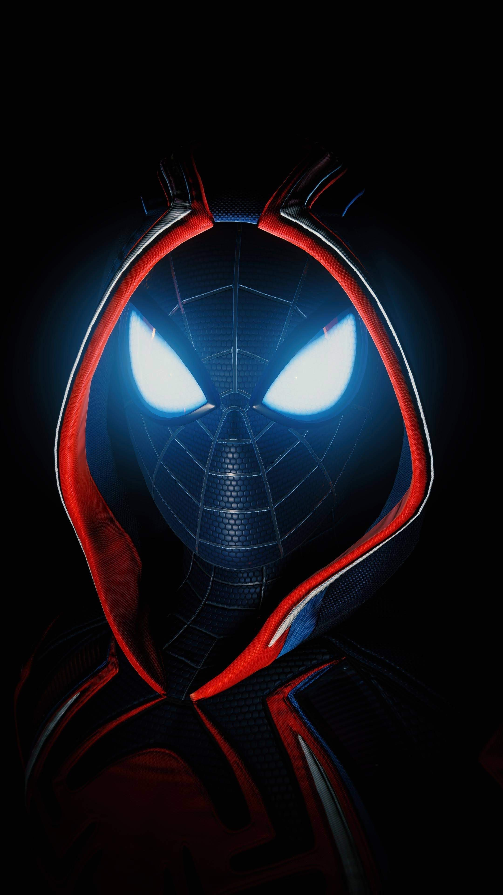

School does keep me pretty busy, but when I'm not working on assignments, I've got a couple hobbies that I always love doing!
- Watching soccer
- Playing video games
- Watching shows and YouTube
- Going grocery shopping (totally)
One of my favourite things to do when playing video games is to stop and appreciate the hard work and great graphics in them all!
As one of my little passion projects during high school, I even created an Instagram account called MonsterCrankyGames to journal my hobby. Here's a link! Here's a link!
One other thing I like to do is listen to music, especially when I'm studying. It's just a playlist of some great movie soundtracks